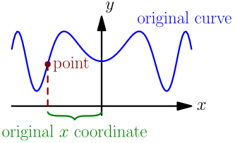
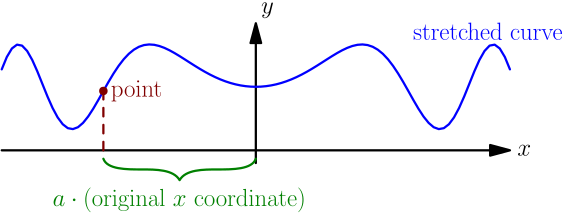
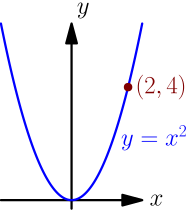
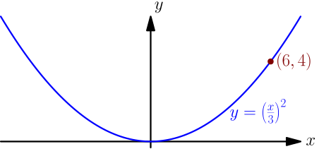
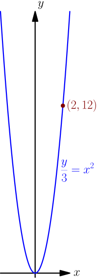
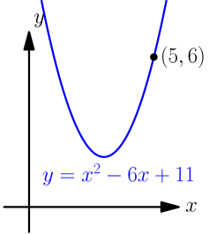
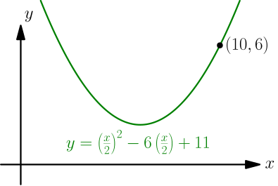
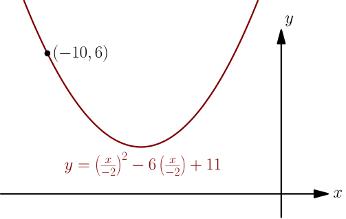

Stretching¶
When I say that a curve is stretched in $x$ direction by some positive number $a$, I mean that $x$ coordinate of each point on the curve gets multiplied by $a$.


So, stretching in $x$ direction by $2$ means that all $x$ coordinates get doubled. This doubles all distances from the $y$ axis, because that's what $x$ coordinates are (except that $x$ coordinates can be negative, as is the case in the above pictures). In other words, if $P=(P_x, P_y)$ is a point on the original curve, then the stretched curve contains a corresponding point $(aP_x, P_y)$.
If we first stretch a point $P=(P_x,P_y)$ by $a$, we get $(aP_x,P_y)$, and stretching this by $\frac{1}{a}$ gives the point $$ \left( \frac{1}{a} (aP_x), P_y \right) = (P_x,P_y) = P. $$ This is very similar to shifting, where shifting left was used to cancel shifting right; now we can just stretch by $\frac{1}{a}$ to cancel stretching by $a$. By doing all the same things as we did in the shifting derivation, we get the following result.
If $a$ is a positive number, then replacing $x$ with $\frac{x}{a}$ in the equation of a curve stretches the curve in the $x$ direction by $a$, and replacing $y$ with $\frac{y}{a}$ in the equation of a curve stretches the curve in the $y$ direction by $a$.
Finally, here are some pictures to show what stretches in $x$ and $y$ directions look like.



Notice how the "tip" of all these parabolas is at the origin $(0,0)$. This is true in general; stretching the point $(0,0)$ does not change it, because the coordinates get multiplied by a number, and multiplying $0$ by something does nothing.
Stretching by a negative number¶
The above result works for positive numbers $a$, but what happens for other numbers? If $a$ is zero, we end up replacing $x$ with $\frac{x}{0}$; we don't want to divide by zero. Let $a$ be a negative number.
Replacing $\frac{x}{a}$ is same as first replacing $x$ with $\frac{x}{\abs{a}}$ and then replacing $x$ with $-x$; every occurence of $x$ first turns into $\frac{x}{\abs{a}}$ and then into $$ \frac{-x}{\abs{a}} = -\frac{x}{\abs{a}} = \frac{x}{-\abs{a}} = \frac{x}{a}. $$ Here we used the fact that $a$ is negative, which means that $a = -\abs{a}$.
Above we saw that replacing $x$ with $\frac{x}{\abs{a}}$ means stretching by $\abs{a}$, and in this derivation, we saw that replacing $x$ with $-x$ means reflecting about the $y$ axis. In this sense, stretching by a negative number $a$ is same as stretching by $\abs{a}$ and then reflecting.
Let $a$ be a nonzero number. Replacing $x$ with $\frac{x}{a}$ in the equation of a curve
- stretches the curve in $x$ direction by $a$, if $a$ is positive;
- stretches the curve in $x$ direction by $\abs{a}$ and reflects about the $y$ axis, if $a$ is negative.
Replacing $y$ with $\frac{y}{a}$ in the equation of a curve
- stretches the curve in $y$ direction by $a$, if $a$ is positive;
- stretches the curve in $y$ direction by $\abs{a}$ and reflects about the $x$ axis, if $a$ is negative.
It looks like this:


